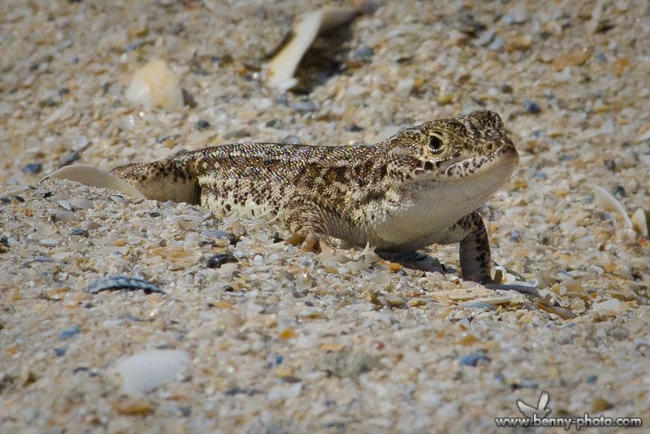
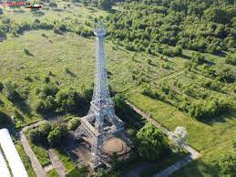
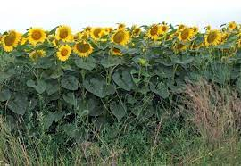
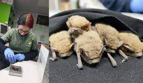

Vegetația județului Ialomița are caracter de stepă pe 65% din suprafața acestuia, întâlnindu-se următoarele tipuri: • vegetație de stepă primară la Cocora, Sălcioara, Movila, formată din graminee (Stipa ucrainica, Stipa lessingiana) lipsite de valoare furajeră și dicotiledonate cu Caragana mollis; • vegetație de silvostepă, în sud-vestul județului, cu păduri mari la Groasa, Odaia Călugărului, Sinești, Deleanca, Morăreanca, unde se înregistrează arborele de stejar pufos și brumăriu, cer, gârniță, salcâm; • vegetație de stepă, formată din graminee (Stipa ucrainica, Stipa lessingiana) lipsite de valoare furajeră și dicotiledonate cu Caragana mollis, cu arbori și arboret de pădure, se regăsesc în pădurile de la Redea (com. Ion Roată), Cornatele (com. Cosâmbești), Beslești - Popești (com. Sudiți), Ciunga (com. Movila) și care cuprind frasinul, părul de stepă primară la Cocora, Sălcioara, Movila; • vegetație de stepă, cu arbori și arboret de pădure, regăsiți în pădurile de la Redea (com. Ion Roată), Cornatele (com. Cosâmbești), Beslești - Popești (com. Sudiți), Ciunga (com. Movila) și care cuprind frasinul, părul și mărul pădureț, ulmul, jugastrul, păducelul, porumbarul, lemnul câinesc, măceșul, cornul, sângerul; • vegetație de luncă: stuf, papură, rogoz, salcie, plop, stejar în Lunca Ialomiței (Bărcănești, Speteni, Alexeni, Slobozia, Bueasca, Andrășești) și în Lunca Dunării (Bordușani, Săltava, Balaban); • vegetație lacustră: orzoaica de baltă, brădișul, lintița, coada calului, limba broaștei, săgeata apei, cucuta de apă, piciorul cocorului; • alte tipuri: urzica, troscot, pălămida, mohor, mușețel, coada șoricelului, păpădie, ceapa ciorii, ghiocel, brebenel, etc. (Strategie Ialomița, 2010, cap. III).
Fauna existentă în județul Ialomița se poate clasifica astfel: • specii de stepă: popândău (Citellus citellus), hârciog (Cricetus cricetus), orbete (Spalax leucodon), șoarecele de câmp (Mesocricetus newtoni), dihor de stepă (Mustela eversmani), iepure de câmp (Lepus europaeus), prepelița (Coturnix coturnix), potârniche (Perdix perdix), șoarecele de mișună (Musculus spigilegus), nevăstuică (Mustela nivalis); • specii de pădure: căpriorul (Capreolus capreolus), mistrețul (Sus scrofa), vulpea (Vulpes vulpes), șoarecele de pădure (Apodemus sylvaticus), viezurele (Meles Meles). S-au mai semnalat: bizamul, câinele enot, vrabia spaniolă; • păsări: prigoria (Merops apiaster), fluierarul (Tringa totanus), dumbrăveanca (Coracias garrulus), ciocârlia (Melanocory-phycalandra), cioara (Corvus corone), coțofana, vrabia (Paser domesticus), graurul (Sturnus vulgaris), turturica (Streptopelia turtur), guguștiucul (Streptopelia decaocto), fazanul colonizat (Phasianus colchicus); • reptile: șarpele rău (Coluber caspius), șopârla de stepă (Lacerta taurica), șopârla de câmp (Lacerta agilis chersonensis)
   